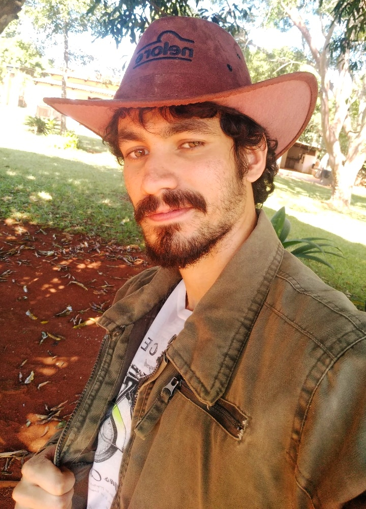

Meu nome é Luan Victor Tenório Xavier
Brasiliense, 25 anos, atualmente moro em Cidade Ocidental-GO. Adoro tecnologia e inovação e sou aluno de desenvolvimento web na Trybe.
Com o conhecimento adquirido na formação espero conseguir desenvolver tecnologias capazes de mudar a vida das pessoas